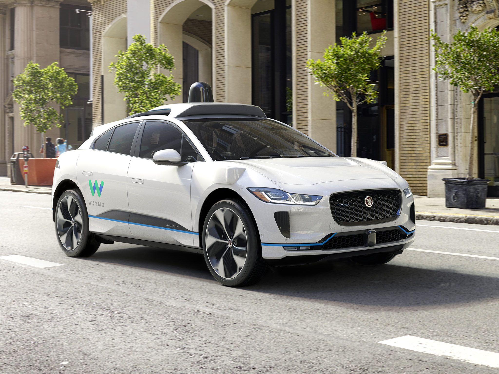

Conceitos
Conceitos Básicos da Inteligência Artificial
A inteligência artificial (IA) é um campo da ciência da computação que se concentra na criação de sistemas capazes de realizar tarefas que normalmente requerem inteligência humana. Isso inclui aprendizado, raciocínio, percepção e compreensão de linguagem.
- Machine Learning (Aprendizado de Máquina): Subárea da IA que permite que máquinas aprendam com dados sem serem programadas diretamente.
- Redes Neurais: Método de inteligência artificial que ensina computadores a processar dados de uma forma inspirada pelo cérebro humano.
- Deep Learning: Um tipo avançado de aprendizado de máquina com múltiplas camadas de redes neurais.
- Processamento de Linguagem Natural (PLN): Permite que máquinas compreendam, interpretem e gerem linguagem humana.
Esses conceitos são fundamentais para entender como a IA funciona e como ela pode ser aplicada em diversas áreas, desde assistentes virtuais até diagnósticos médicos.
Aplicações práticas de IA
Carros Autônomos: Usam sensores, câmeras e algoritmos de IA para tomar decisões em tempo real e dirigir sem intervenção humana.

Waymo
Impactos da IA na sociedade
Positivos
- Aumento da eficiência e produtividade.
- Melhoria em diagnósticos e cuidados de saúde.
- Automação de tarefas repetitivas.
- Acesso facilitado à informação e serviços.
Negativos
- Desemprego em setores automatizados.
- Preocupações com privacidade e segurança de dados.
- Desigualdade no acesso à tecnologia.
- Substituição de empregos por máquinas (desemprego tecnológico).
- Viés algorítmico e decisões injustas.
- Dependência excessiva da tecnologia.